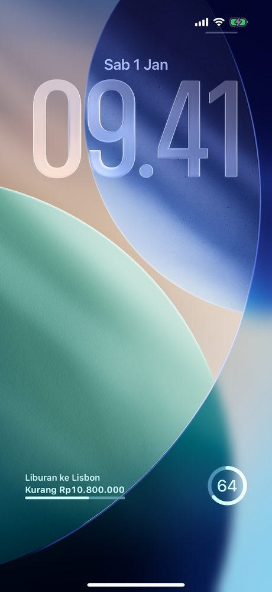
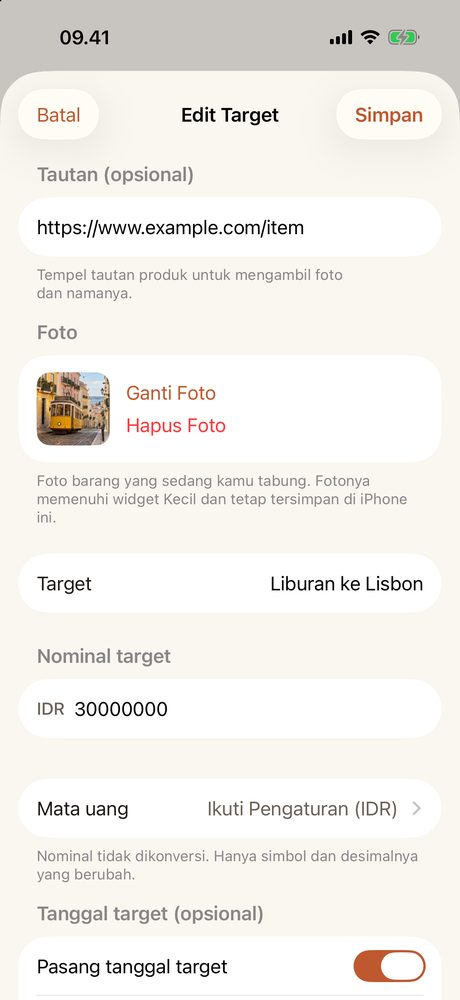
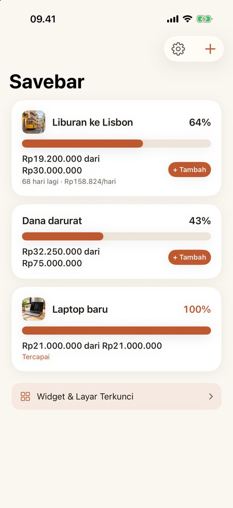

Ketuk + di widget saat kamu menyisihkan uang. Atur tanggal untuk melihat berapa yang perlu ditabung per hari.
Sisihkan sedikit uang, ketuk tombol nominal seperti +Rp100.000 di widget, dan lihat bilahnya bergerak.
Yang sedang kamu tabung, di Layar Utama. Widget Kecil gratis: satu target, bilah progresnya, dan tombol yang menambahkan nominal pilihanmu tanpa membuka app.

Lihat targetmu makin dekat setiap hari.Pro Widget Layar Terkunci: lingkaran dengan persentase, sisa yang perlu ditabung, dan tampilan satu baris.
Tambah ke target dari pergelangan tangan.Pro Tombol nominal yang sama seperti di widget, plus komplikasi tampilan jam.
Tambahkan foto barang yang sedang kamu tabung — widget Kecil menampilkannya besar. Simpan barang dari halaman toko di Safari — atau lewat tombol Bagikan — sebagai target, lengkap dengan foto, nama, dan harganya.

Dengan tanggal: berapa hari lagi dan berapa yang perlu disisihkan per hari. Setiap setoran tersimpan di riwayat yang bisa kamu edit atau hapus.

Tanpa iklan. Tanpa akun.
Sekali bayar, tanpa langganan.
Tanpa iklan, tanpa langganan. Pro dibeli sekali bayar.
Tanpa koneksi bank, tanpa akun, tanpa langganan.
English · 日本語 · 简体中文 · 繁體中文 · 한국어 · Deutsch · Français · Español · Italiano · Nederlands · Polski · Português · Русский · ไทย · Türkçe · Українська · Tiếng Việt · Bahasa Indonesia